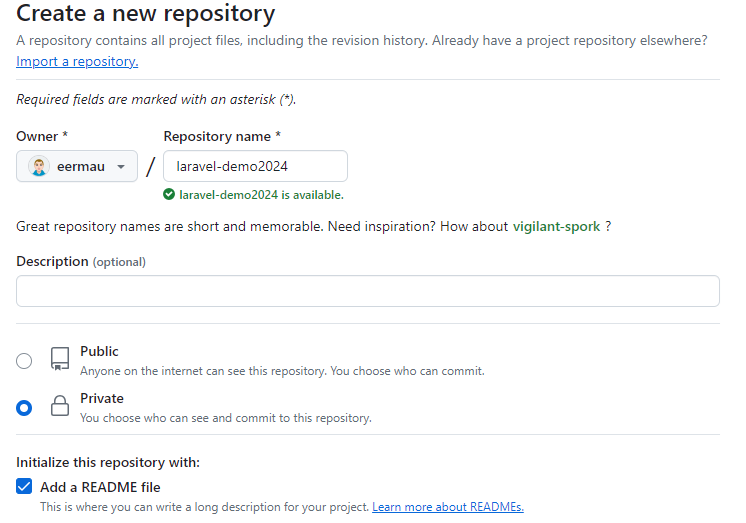
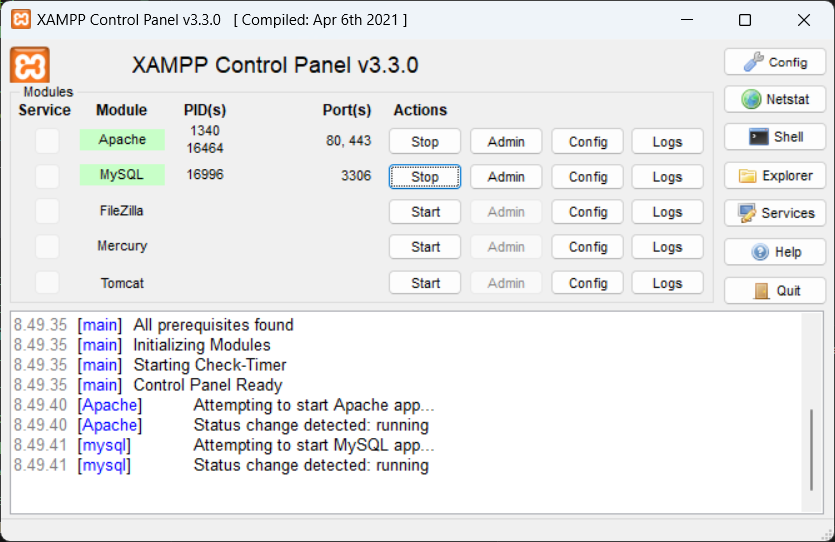
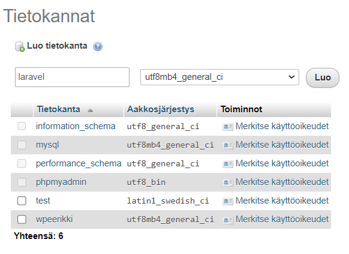

Laravel
Yleistä
- Tee itsellesi private GitHub-repo

- Asenna Software Centerin kautta XAMPP ja Composer
- Käynnistä XAMPP ja luo phpMyAdminin avulla uusi tietokanta nimeltä "laravel"


Tutoriaali
Käydään läpi tutoriaali Build Chirper with Blade.
Tietokantayhteys
.env-tiedostossa määritelty tietokantayhteys:
DB_CONNECTION=mysql DB_HOST=127.0.0.1 DB_PORT=3306 DB_DATABASE=laravel DB_USERNAME=root DB_PASSWORD=
Aja migrations-tiedostot, tarkista luotiinko tietokantaan taulut oikein.
php artisan migrate
Installing Laravel Breeze
- avaa toinen terminal
cd chirper
composer require laravel/breeze --dev
php artisan breeze:install blade
npm run dev